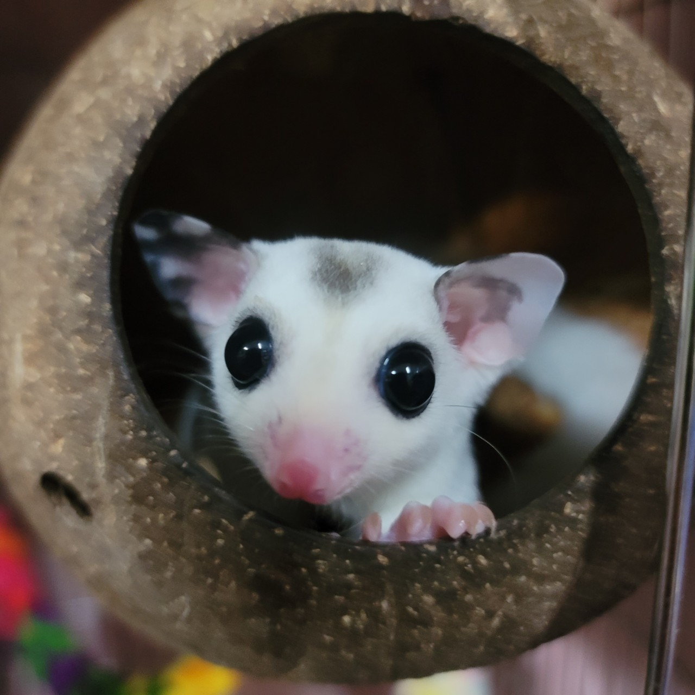
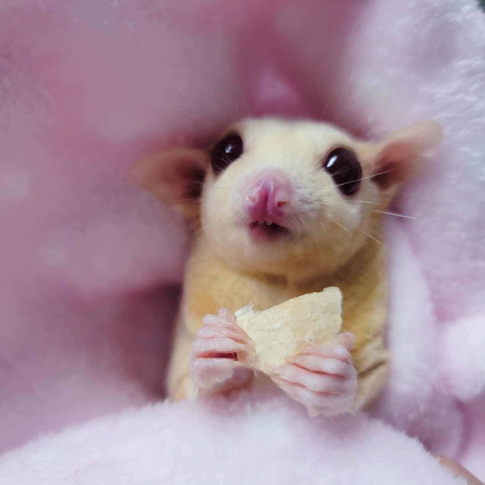
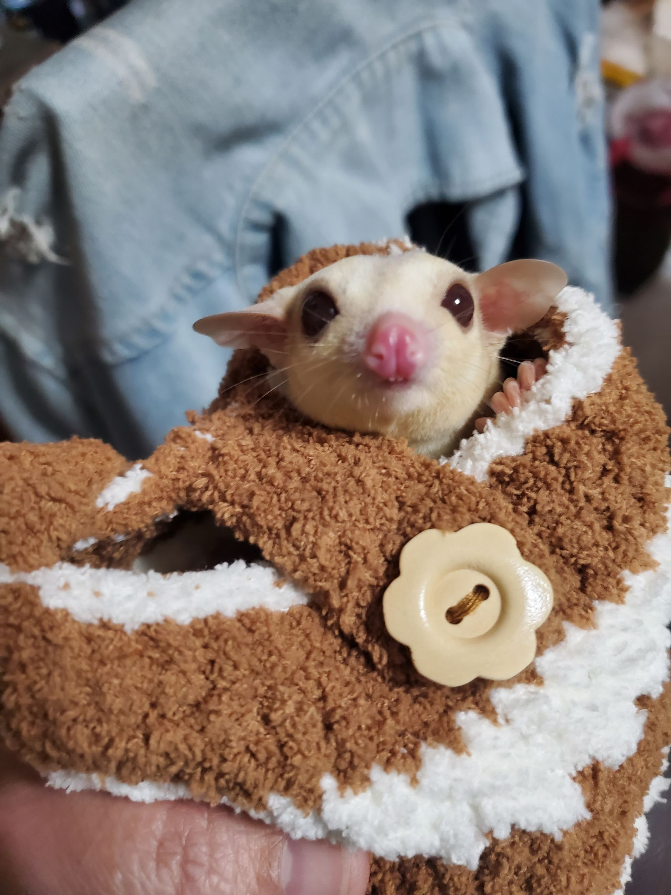
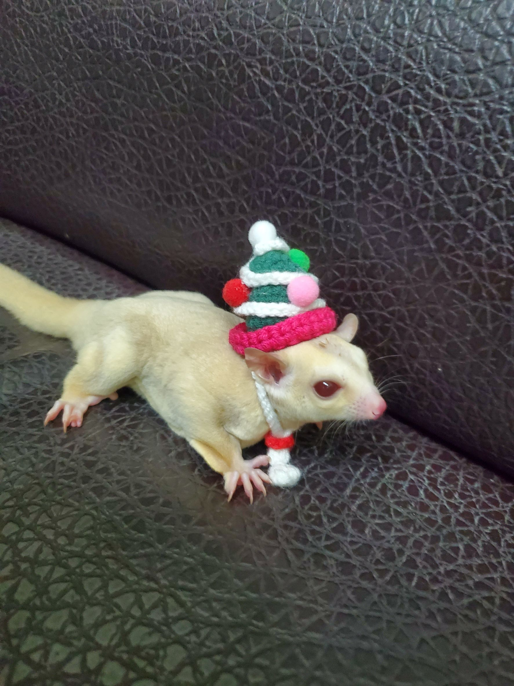
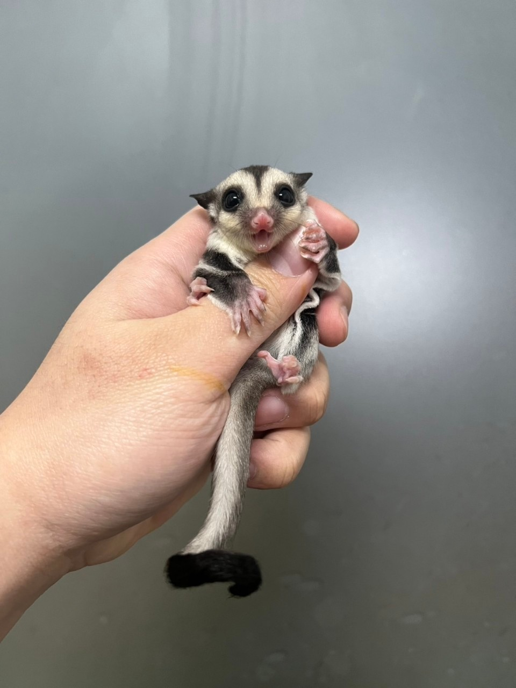
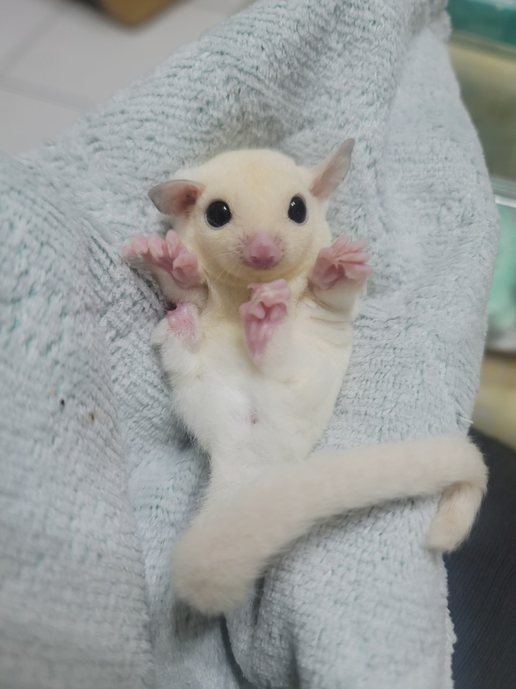

| 可愛模樣 | 名字 | 性別 | 介紹 |
|---|---|---|---|
 |
木耳 | 男 | 家裡第一位成員，總是活潑好動真可愛。 |
 |
蓮子 | 女 | 家裡第二位成員，總是活潑好動真可愛。 |
 |
奶茶 | 男 | 家裡第三位成員，總是活潑好動真可愛。 |
 |
珍珠 | 女 | 家裡第四位成員，總是活潑好動真可愛。 |
 |
仙草 | 男 | 家裡第五位成員，總是活潑好動真可愛。 |
 |
奶凍 | 女 | 家裡第六位成員，總是活潑好動真可愛。 |
關於我們
- 蜜袋鼯
- 蜜袋鼯（Petaurus breviceps）是一種小型的有袋類動物，體型比較小，體長約為30-40cm，尾巴長約為25-30cm，體重約為1-1.5kg。牠們原生於澳洲東部、北部、新幾內亞及印尼的森林，並已被引進到塔斯曼尼亞。牠們是夜行性動物，會食用昆蟲、脊椎動物及樹汁，特別喜愛甜食，因此得名。牠們的特徵是擁有長而不會抓物的尾巴和可滑行的翼膜，這使牠們能在樹間滑行50-150米。牠們會在適宜的棲息地內形成群體，通常每1000平方米有一隻蜜袋鼯。性成熟的年齡約為雄性12-15個月、雌性8-12個月，每年可繁殖一次，雌性每胎生1-2隻幼鼯。蜜袋鼯在寒冷或食物匱乏時會進入休眠狀態以保存能量。牠們在野外的壽命可達9年，飼養時可達12年。雖然不瀕危，但牠們受到保護，並且常作為寵物飼養。
資料來源：維基百科